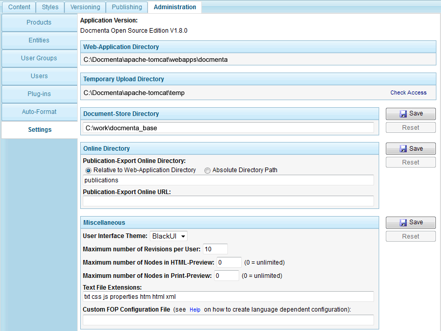

2.7.7. Application settings
To configure global application settings, switch to the "Settings" tab of the "Administration" workspace (see screenshot below).

Figure 2.7.35. Application settings panel
Following fields are available:
Product Version
The application name and version number of the Docmenta installation.
Web-Application Directory
This is the filesystem location of the Docmenta Web-Application. This location depends on the installation directory of the web-server. The structure of this path is as follows:
<Web-Server-Directory>/webapps/docmenta
This setting cannot be changed within the Docmenta application. However, you can stop the web-server, move the web-server installation (including the webapps/docmenta folder) to a new location and then restart the web-server. Of course you have to assure that no users are connected, before moving the web-server installation.
Temporary Upload Directory
This field shows the temporary directory as defined by the Java system property java.io.tmpdir. Docmenta uses this directory as temporary upload directory. Click on the link "Check Access" to test, whether Docmenta has sufficient access-rights for this directory. If the access rights are not sufficient, then either change the access-rights of the directory, configure another directory as java.io.tmpdir or start the web-server with a different account (e.g. as administrator).
Note that Docmenta also needs full access to the document-store directory (see below). Furthermore, the web-server itself may need access to additional directories within the web-server installation directory (e.g. to write log files). Consult the documentation of your web-server for more information.
Document-Store Directory
This is the directory where the application settings, user data and by default also the products (content, styles, translations, ...) are stored. If you have moved the document-store directory to a new location within the filesystem, then enter the new location in the input field and click the "Save" button next to the input field. You have to restart the web-server for the new setting to take effect. When you try to log in and Docmenta cannot find a document-store at the configured location, then Docmenta automatically displays the setup-dialog (see Section 2.1.4, “Setup”).
Note that Docmenta needs read/write access to the complete document-store directory.
Important!
Do not move the document-store directory as long as users are connected to the application!
Publication-Export Online Directory
When the "online" checkbox of an exported publication is checked (see Section 2.6.3, “Publication export”), then the publication-files are copied into the directory configured here. It is allowed to enter a relative path or an absolute filesystem-path. A relative path is relative to the Web-Application Directory of the Docmenta web-server installation (see above). Using an absolute path can be useful, if you are using a separate web-server to put the publications online. For example, if you are using an Apache HTTP-Server to serve exported publications, then you can enter an absolute path to the htdocs directory here.
Publication-Export Online URL
This is the URL corresponding to the publication-export online directory. For example, if you are using an Apache HTTP-Server to serve publications, then you should enter the URL of the server here. If the "online" checkbox of an exported publication is checked (as described in Section 2.6.3, “Publication export”), then the publication can be viewed online by clicking the "Open" link. This opens the publication as a link relative to the URL provided here. Therefore, the URL entered here must exactly address the directory entered in the field "Publication-Export Online Directory" above.
User Interface Theme
The user-interface theme defines the main colors of the application. You have to log-out and log-in for the changes to take effect.
Maximum number of Revisions per User
Sets the maximum number of content revisions stored for a single user (see Section 2.3.4.5, “Revision history”). For example, if maximum revisions is set to 10 and two users are editing a content node, then at most 10 revisions of the node are stored for each user, i.e. at most 20 revisions are created for this node. Note that if a user edits a content node and the maximum number of revisions has been reached, then the oldest revision that was created by himself is removed (i.e. if a user edits a content node, this will not delete the revisions of other users).
Maximum number of Nodes in HTML-/Print-Preview
For large product-trees, i.e. with thousands of content-nodes, the size of the preview should be restricted to avoid high server-loads caused by single preview-clicks.
For example, a value of "100" allows section-previews with up to 100 contained nodes. Given this example, if a section with more than 100 nodes is selected in the product-tree, then the preview-area displays a hint that the section is too large for preview. Note that the maximum number of nodes can be configured separately for HTML- and Print-preview. To allow unlimited previews, enter the value "0".
Text File Extensions
Docmenta has text-file support. Text-files can edited with the integrated text-editor and can be included as listings via content-inclusion. Docmenta considers a file as a text-file, if it has one of the listed file extensions. Enter the file extensions, separated by spaces, that are used for text-files. Click the "Save" button to save the modified list.
Custom FOP configuration File
In case the configuration needs to be customized, the path to a custom FOP configuration file can be entered here. See the Apache FOP homepage for details on the configuration of the Apache FOP formatter. The file path has to be absolute or relative to the document-store directory (see above). If a file with same name but suffix _xx (where xx is a language code) exists in the same directory, then this configuration file is used for all exports of publications with content language xx. For example, if the path "fop_configs\my_config.xml" has been entered, and the directory fop_configs contains a file with name my_config_en.xml, then this file is used for all exports with content language EN (English), whereas for all other languages the configuration file my_config.xml is used. Note that the actually used configuration file is shown in the export log file.